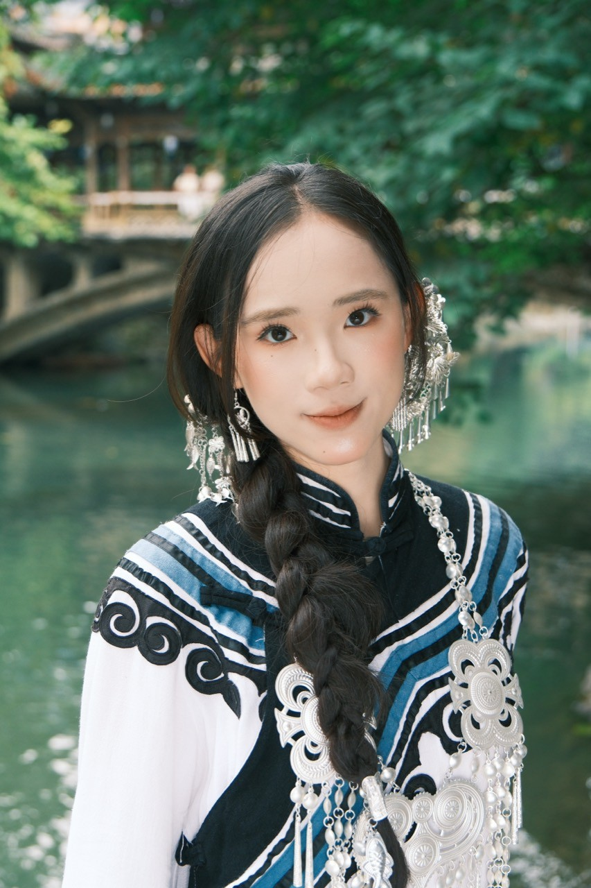
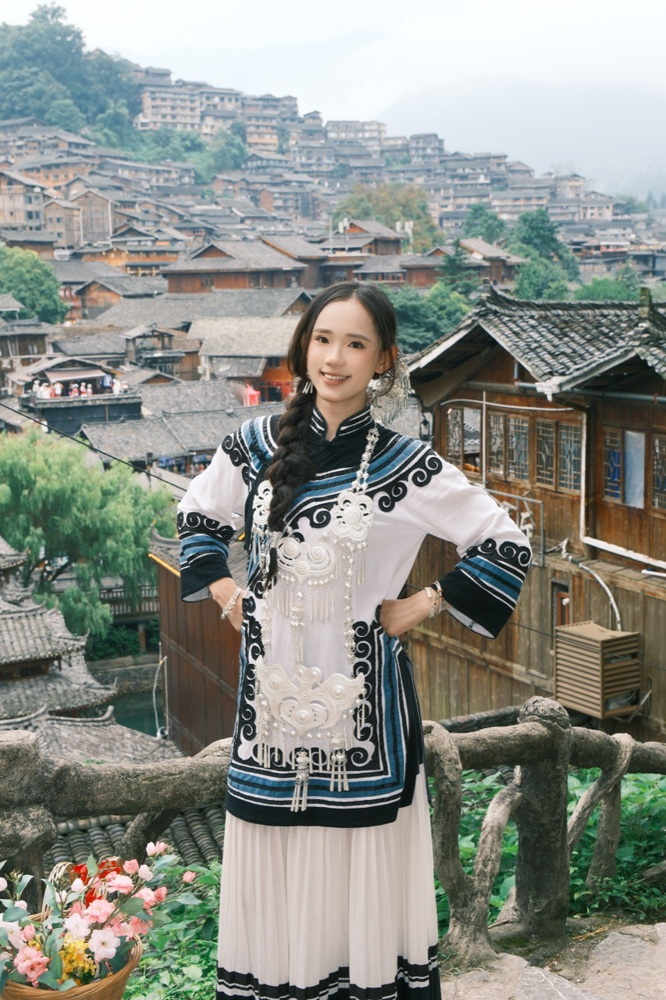
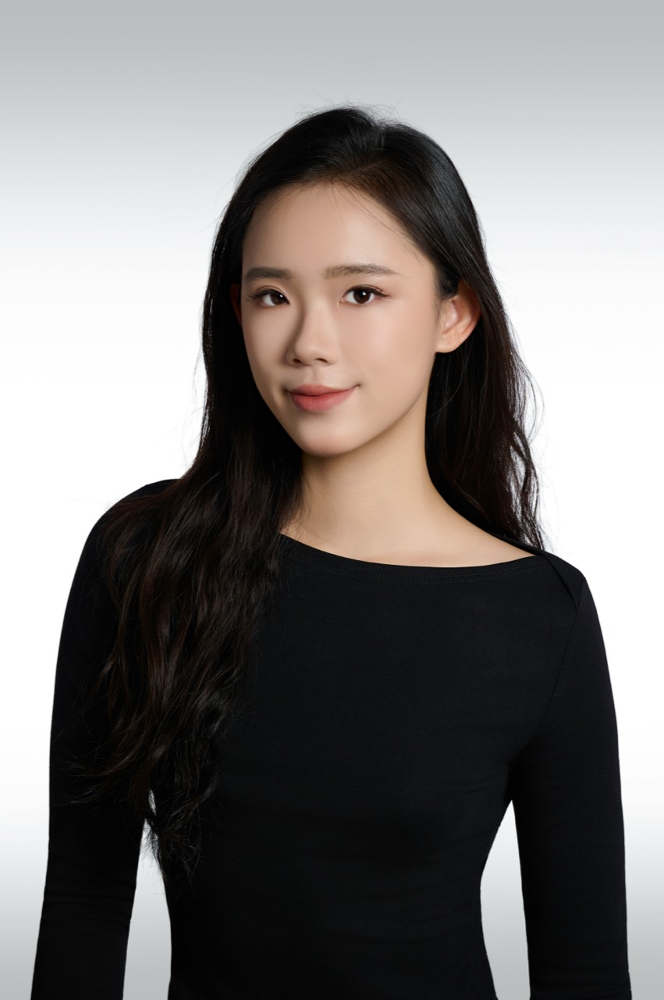
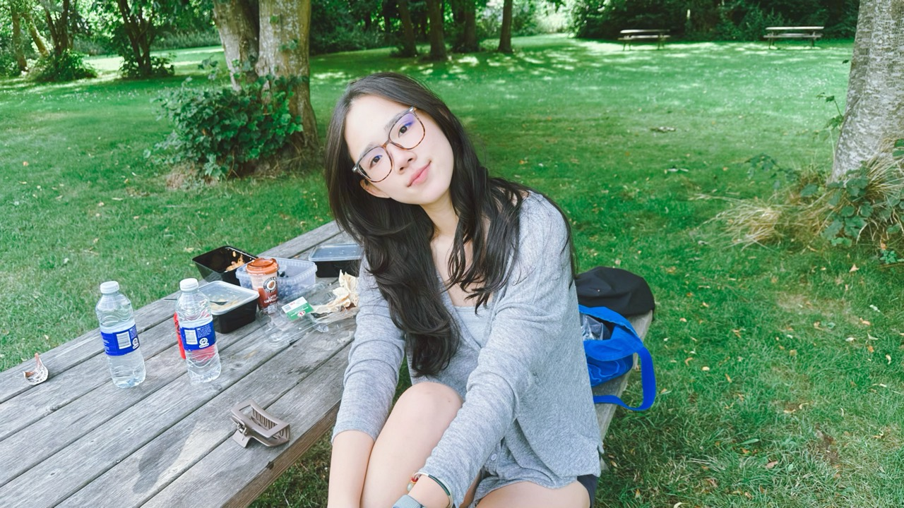
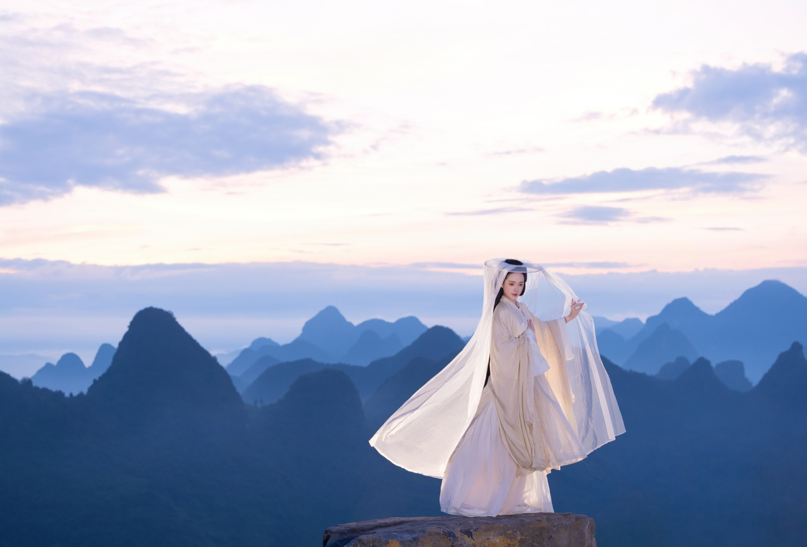
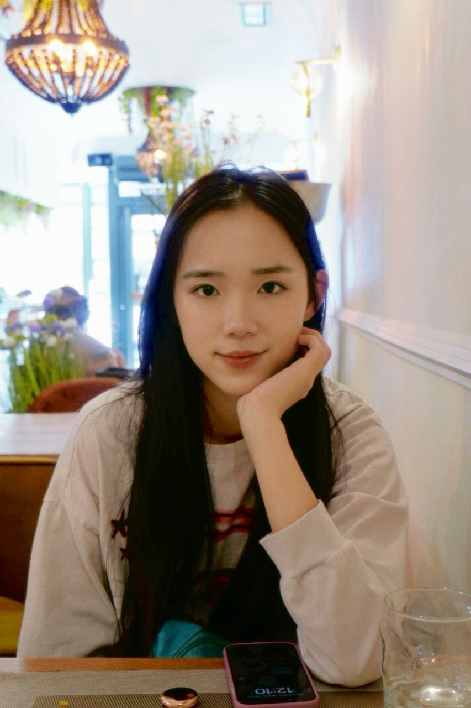
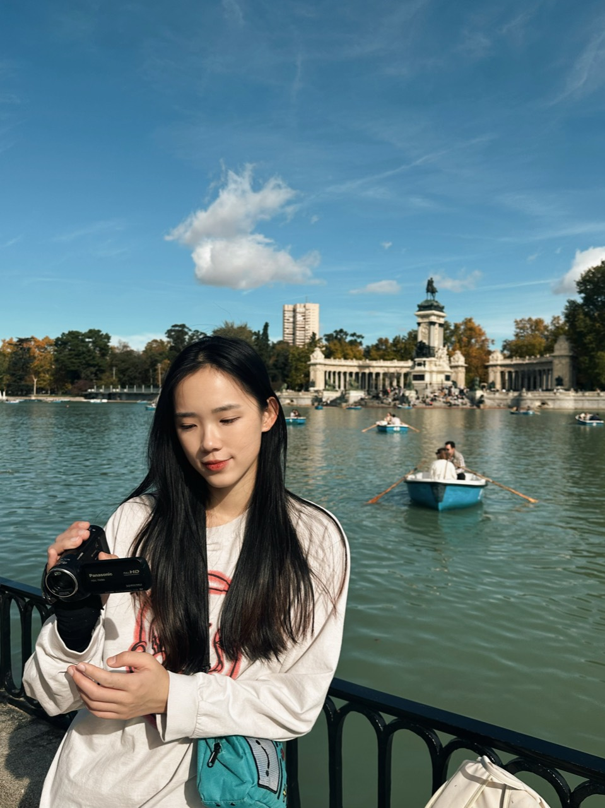

A LITTLE MORE ABOUT ME
Hi, I’m Chenshuo.
Curious about science.
Finding joy in the everyday.
I’m a Biology MSc graduate from the University of Copenhagen, specializing in Molecular Biology and Genetics, with a bachelor’s degree in Biotechnology from Nanjing Agricultural University.
In the lab, I’ve explored liver inflammation and bacterial stress responses. I enjoy hands-on experiments, making sense of results, and turning scientific ideas into clear explanations.
Beyond the lab, high jump has been part of my life since primary school. Organizing campus activities taught me how much I enjoy bringing people together. I also have a soft spot for dogs and the small moments that make an ordinary day special.
This little website brings those different sides of me together. I’m glad you’re here.

LITTLE MOMENTS
Outside the lab
There’s always more to a person than a CV.






1 / 6